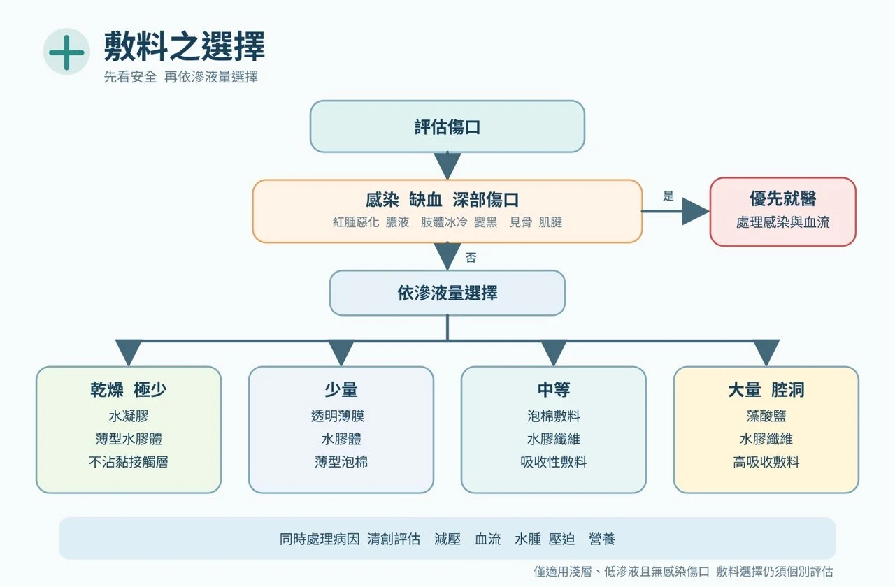

首頁 / 敷料與濕敷換藥
敷料使用原則與濕敷換藥（專業版）
醫護人員臨床應用版 ・ 2026.08 精簡版 ・ 依 WHS／IWGDF 2023／EPUAP-NPIAP-PPPIA 2019／EWMA 指引整理，詳細出處見指引文獻庫
核心概念：敷料不是治療慢性傷口的全部。先診斷病因，再處理傷口床，最後依滲液、感染、深度、疼痛與周邊皮膚選擇敷料。真正決定癒合的是血流、減壓、控水腫、控感染與全身照護（IWGDF 2023；WHS 2023–2024）。
一、敷料選擇前的評估
指引共同原則：敷料選擇必須建立在標準化評估之上，而非直接套用產品（EPUAP/NPIAP/PPPIA 2019；IWGDF 2023）。
| 評估面向 | 對敷料選擇的影響 |
|---|---|
| 病因（糖足／壓力／動脈／靜脈／放射／癌症） | 決定是否需卸壓、加壓、血流評估、切片或緩和照護 |
| 血流（脈搏、ABI/TBI、趾壓） | 動脈缺血傷口不可貿然濕敷乾黑焦痂或積極清創（WHS 動脈潰瘍 2024） |
| 感染（紅腫熱痛、膿、發燒、培養） | 決定抗菌敷料、清創、抗生素或手術；未感染潰瘍不用抗生素（IWGDF/IDSA 2023） |
| 滲液（量、性狀、濕透速度） | 決定吸收力、換藥頻率與周邊皮膚保護 |
| 深度與死腔（潛行、竇道、暴露肌腱骨頭） | 決定是否填塞、NPWT 或進一步清創 |
| 疼痛／出血、周邊皮膚 | 決定非沾黏或矽膠接觸層、皮膚保護膜與低敏固定 |
二、床邊口訣與選擇流程

| 口訣 | 敷料方向 |
|---|---|
| 乾要保濕 | 水凝膠、非沾黏；缺血乾黑焦痂先評估血流 |
| 濕要吸收 | 泡棉、藻酸鹽、親水纖維、高吸收敷料 |
| 髒要清創 | 先決定清創方式（見清創決策）；敷料只是輔助 |
| 臭要控菌 | 抗菌敷料、活性碳；必要時全身治療 |
| 深要填塞 | 藻酸鹽條／親水纖維條，填塞不可過緊、需完整取出 |
| 痛要不沾 | 矽膠接觸層、非沾黏敷料、低黏性固定 |
| 皮膚要保護 | 皮膚保護膜、提升吸收力、低敏固定 |
| 缺血先看血流 | 先血流評估與血管轉介（SVS/GVG 2019） |
1. 先排除嚴重缺血與嚴重感染——足冷、休息痛、乾黑焦痂、壞疽或全身感染徵象，先處理血流與感染。
↓
2. 判斷滲液量——乾燥需保濕；中大量需吸收；滲液突增需重估感染、水腫與靜脈高壓。
↓
3. 判斷深度與死腔——深洞、潛行、竇道需輕度填塞並確認取出。
↓
4. 考量疼痛、出血與周邊皮膚——非沾黏／矽膠接觸層；浸潤加強吸收與皮膚保護。
↓
5. 設定換藥頻率與追蹤——2–4 週未改善即重新評估病因（WHS；IWGDF 2023）。
敷料類別的功能、適應症、限制與品牌對照，見敷料中心；互動選擇見敷料選擇器。實務採「接觸層＋吸收層＋固定層」分層組合，不追求單一產品。
三、依病因的敷料方向（摘要）
| 傷口類型 | 敷料方向 | 病因處置優先（指引核心） |
|---|---|---|
| 糖尿病足 | 非沾黏、泡棉、親水纖維、藻酸鹽；深洞填塞 | 卸壓與血流評估比敷料重要；排除骨髓炎（IWGDF 2023） |
| 靜脈性潰瘍 | 泡棉、高吸收、藻酸鹽、親水纖維 | 壓迫治療是核心；加壓前確認動脈灌流（WHS 2016；EWMA 2023） |
| 動脈性潰瘍 | 乾黑焦痂無感染→乾燥保護；少滲液→非沾黏 | 血流優先；不可亂清創缺血性焦痂（WHS 2024） |
| 壓力性損傷 | 矽膠泡棉、藻酸鹽、親水纖維，必要時 NPWT | 減壓是核心；依分期選敷料（EPUAP/NPIAP/PPPIA 2019，見對照表） |
| 放射性／癌症傷口 | 非沾黏、矽膠接觸層、高吸收、活性碳 | 排除復發；癌症傷口以控滲液、控臭、止血、止痛為目標（EWMA 2025） |
四、換藥頻率與重新評估
| 情境 | 頻率方向 |
|---|---|
| 感染、膿多、需密切觀察 | 每日或更頻繁 |
| 滲液多、易濕透 | 依濕透提早換＋提高吸收力 |
| 滲液中等且穩定 | 每 2–3 天 |
| 乾淨、滲液少／接近癒合 | 延長間隔，減少撕扯保護新生上皮 |
- 敷料外漏、鬆脫或污染時提早更換；疼痛突增、異味、紅腫擴大或發燒→重新評估感染
- 周邊皮膚浸潤→增加吸收力、縮短間隔、皮膚保護膜
- 2–4 週未明顯改善→重新評估血流、感染、壓力、營養、惡性變化與敷料策略
- 抗菌敷料限期使用，1–2 週重新評估，不作常規預防（IWGDF/IDSA 2023）
五、常見錯誤（安全底線）
| 錯誤作法 | 建議修正 |
|---|---|
| 所有慢性傷口用同一種敷料 | 依病因與傷口床狀態重新選擇 |
| 只換藥、不評估血流／糖足不卸壓／靜脈潰瘍不控水腫 | 回到病因治療：血流評估、off-loading、壓迫與抬高 |
| 感染傷口只用銀敷料 | 依感染層級處理，勿延誤清創、培養與全身抗生素 |
| 深洞只蓋表面／填塞過緊 | 適度鬆填、確認取出、追蹤深度 |
| 缺血乾黑焦痂亂濕敷或清創 | 先評估血流，必要時血管轉介 |
| 久不癒合仍不切片 | 外觀不典型或邊緣隆起易出血時考慮切片 |
安全底線：不要讓敷料掩蓋惡化訊號。傷口變大、變深、變臭、疼痛加劇、顏色變黑或全身狀況惡化，應立即重新評估。每一次換藥都是一次重新評估。
六、換藥技術：濕敷換藥（Wet Gauze Dressing）於需清創傷口之使用原則
核心結論：濕潤紗布可短期用於軟化腐肉、暫時覆蓋及輔助自溶性清創；不應把紗布乾燥後硬撕的 wet-to-dry 當作慢性傷口的常規清創方式（Wodash 2013；WHS 2023）。
1. 先分清楚兩種作法
| 作法 | 主要目的 | 臨床評價 |
|---|---|---|
| 濕潤紗布／濕對濕 Moist gauze / wet-to-moist | 維持濕潤、軟化腐肉、輔助自溶性清創 | 可在適當血流與明確目標下短期使用；取下時應保持濕潤，避免傷害肉芽。 |
| 濕到乾 Wet-to-dry | 紗布乾燥後撕除，形成非選擇性機械清創 | 一般不建議常規使用；可能同時移除壞死組織、健康肉芽及新生上皮。 |
2. 清創前的三項必要判斷
(1) 傷口是否具有癒合條件：先評估組織灌流（尤其足部、足跟與下肢傷口）；必要時 ABI、TBI、趾壓或血管影像。血流足夠、有癒合可能，且壞死組織阻礙癒合或感染控制時，才考慮積極清創。
重要禁忌：嚴重缺血、尚未血管重建、乾性壞疽，或缺血性足趾／足跟上的乾燥、完整、無感染徵象之穩定焦痂——原則上保持乾燥、保護並先做血管評估，不以濕敷軟化或任意清創。
(2) 需要移除的是哪一種組織：薄層鬆散腐肉→可短期濕潤軟化；厚黏附壞死→單靠濕紗布不足，評估銳利／外科／酵素清創；健康肉芽／新生上皮→避免 wet-to-dry，改用不沾黏敷料；膿瘍或深部感染→濕敷不能取代切開引流與抗感染治療；缺血性乾焦痂→保持乾燥先處理血流。
(3) 清創目標是否明確：軟化移除鬆散腐肉、降低細菌與生物膜負荷、建立肉芽生長環境、呈現真正傷口深度。
3. 操作重點
- 評估疼痛、血流、感染、出血風險、深度及暴露組織；必要時先止痛
- 0.9% 無菌生理食鹽水低壓沖洗；移除鬆散腐肉，不強拉黏附組織
- 紗布擰至濕潤但不滴水；輕柔覆蓋，腔洞鬆散填放——不塞緊、不留碎片、不盲目填入看不到底的竇道
- 外加吸收敷料並保護周圍皮膚；在紗布完全乾燥前更換，已黏住先浸潤再移除
- 每次記錄組織比例、滲液、氣味、疼痛、尺寸與周圍皮膚
4. 換藥頻率與停用時機
| 臨床狀況 | 建議原則 |
|---|---|
| 少量滲液且可維持濕潤 | 通常每日 1 次 |
| 中量滲液或需密切觀察 | 每日 1–2 次 |
| 大量滲液、污染或感染監測 | 每日 2–3 次；頻繁飽和應改高吸收敷料 |
| 乾燥、飽和、滲漏、脫落或糞尿污染 | 立即更換 |
| 每日須換 3–4 次才不乾或不漏 | 濕紗布不適合長期使用，重新選擇敷料 |
停用或轉換時機：傷口床主要為健康肉芽或開始上皮化；腐肉 1–2 週未減少或尺寸無改善；換藥反覆疼痛出血或肉芽損傷；周圍皮膚浸潤發白糜爛；傷口擴大變深或深層組織暴露；出現缺血、蜂窩性組織炎、膿瘍、骨髓炎或全身感染疑慮；滲液超過紗布吸收能力。
5. 臨床決策口訣（四步驟）
先判斷能不能清創（血流與癒合潛力）→ 再辨認要清除什麼組織 → 選擇最具選擇性、創傷最低的方式 → 依肉芽、滲液與感染變化及時停用或轉換敷料。
濕紗布是局部照護工具，不能取代減壓、壓迫治療、血管重建、感染控制、營養及血糖管理。出現擴大紅腫熱痛、惡臭膿液、發燒、壞死快速擴大、捻髮感、足部冰冷蒼白或疼痛突然加劇，應立即接受醫療評估。
依據（詳指引文獻庫）：IWGDF Guidelines 2023（DOI:10.1002/dmrr.3644 系列）；IWGDF/IDSA 感染指引 2023（DOI:10.1093/cid/ciad527）；Gould LJ, et al. WHS Pressure Ulcers 2023 update（WRR 2024, DOI:10.1111/wrr.13130）；Federman DG, et al. WHS Arterial Ulcers 2023 update（WRR 2024, DOI:10.1111/wrr.13204）；Marston W, et al. WHS Venous Ulcers（WRR 2016, DOI:10.1111/wrr.12394）；EPUAP/NPIAP/PPPIA International Guideline 2019；EWMA Lower Leg Ulcer 2023／Palliative 2025；Conte MS, et al. Global Vascular Guidelines（JVS 2019, DOI:10.1016/j.jvs.2019.02.016）；Wodash AJ 2013（wet-to-dry 證據）。
最後更新：2026-08-31 ・ 2026.08 精簡版（依指引文獻庫學會指引整理）